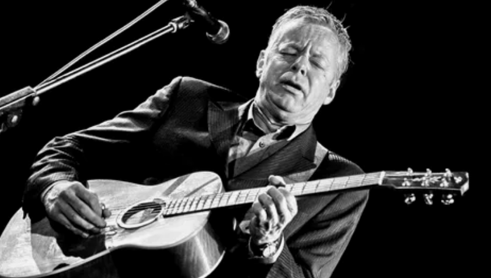
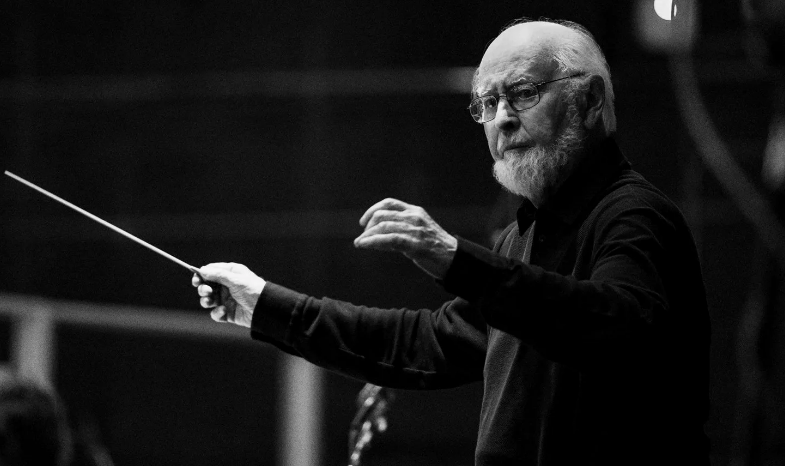

Гитара — один из самых популярных и душевных музыкальных инструментов. Её звук сопровождает нас в походах, у костра, в уютных домашних вечерах и на больших сценах.
Мы расскажем об истории создания легендарных моделей, покажем известных исполнителей и поможем вам сделать первый шаг в мир музыки.


Эти музыканты изменили представление о том, на что способна гитара. Слушайте, вдохновляйтесь и ищите свой уникальный стиль.
Гитара стала символом целых музыкальных эпох. В 1950-е годы электрогитара породила рок-н-ролл, который захватил сердца миллионов молодых людей по всему миру. Такие гитаристы, как Чак Берри и Бо Диддли, создали новый язык игры, основанный на ритмичных риффах и энергичных соло.
В 1960-е гитара стала голосом протеста и свободы. Боб Дилан, Джоан Баэз и другие фолк-исполнители использовали акустическую гитару как инструмент для донесения важных социальных идей. Позже, в эпоху хард-рока и хэви-метала, гитара обрела новую мощь: глубокий насыщенный звук с дисторшеном и длинные виртуозные соло стали её визитной карточкой.
Сегодня гитара остаётся одним из самых популярных инструментов. От уютных домашних концертов до стадионных шоу — её звук продолжает объединять людей. Благодаря доступности и богатому звучанию, гитара вдохновляет новые поколения музыкантов по всему миру.